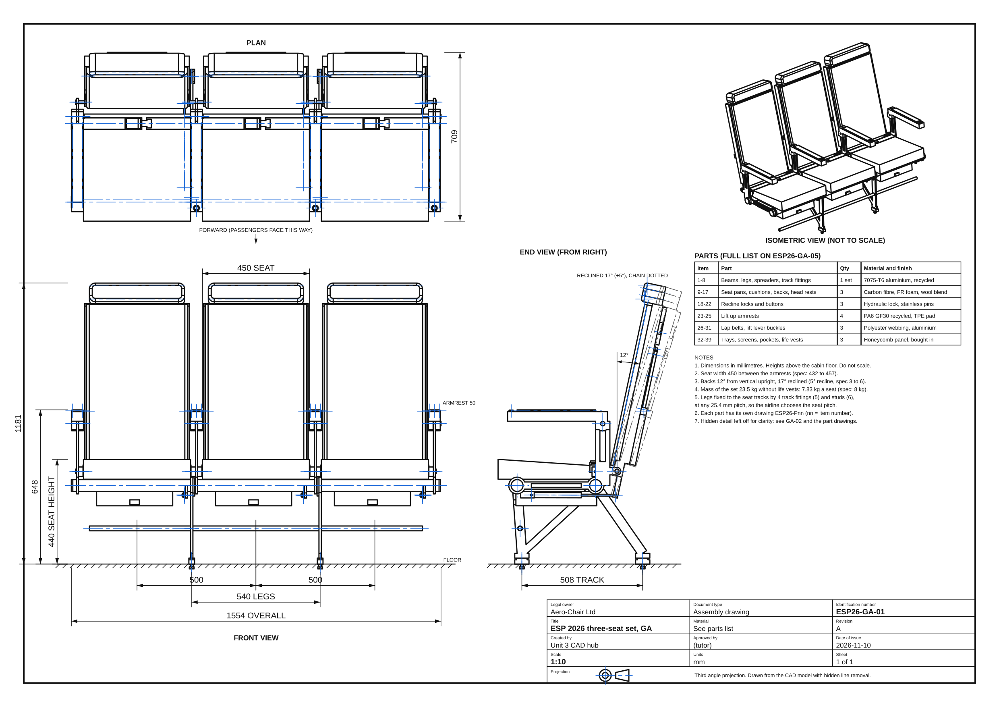
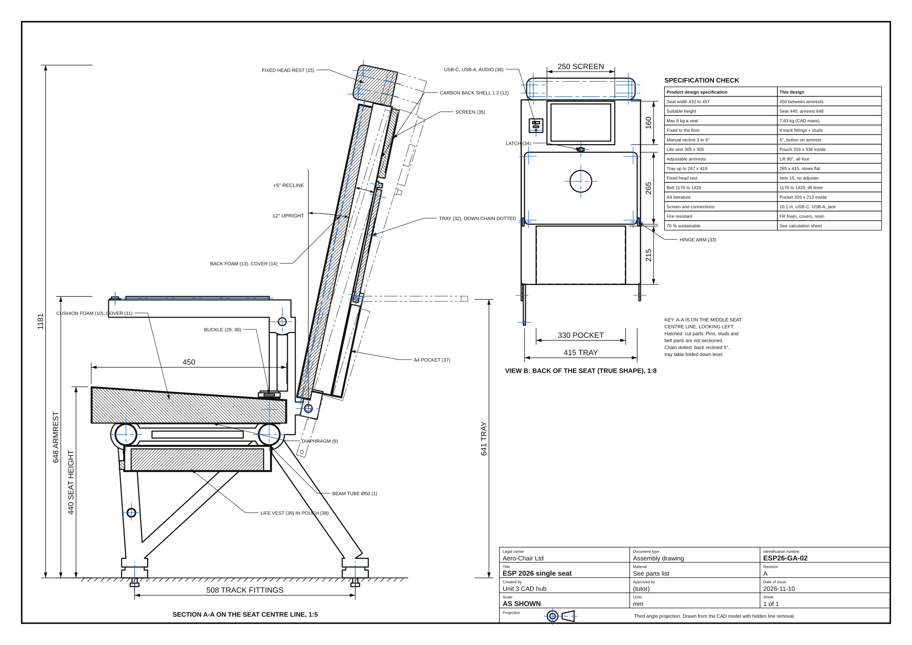
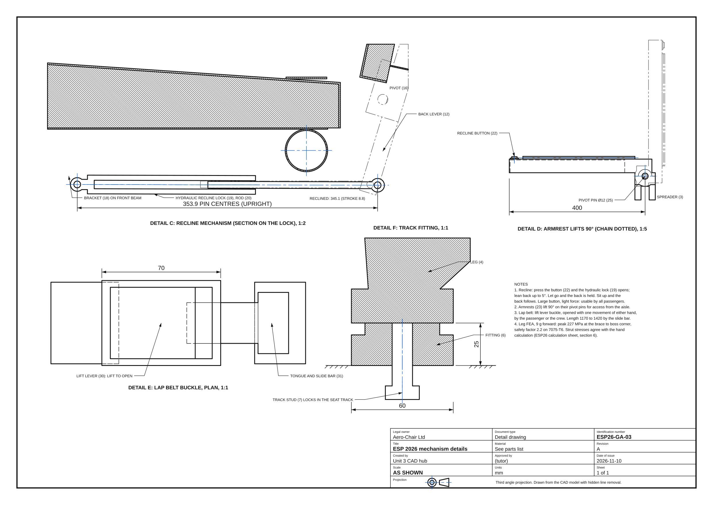
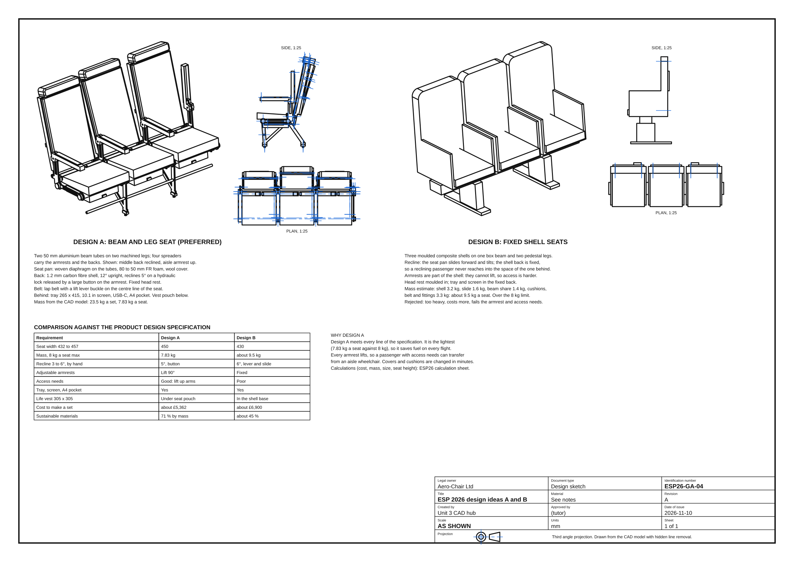

Task 2 submission set
Part A (two design ideas, annotated, with sketches in 3D, side and plan): sheet ESP26-GA-04, with the calculations (cost to manufacture, weight, size, seat height and every assumption) in their own document. Part B (the preferred design, dimensioned and to scale): sheets ESP26-GA-01 to 03, the parts list ESP26-GA-05 and a drawing for every one of the 39 parts (ESP26-P01 to P39), with the reflective notes (about 500 words) in their own document.
Drawings (A3)












Every part also has its own sheet (third angle and first angle, with a key sizes table), listed with the parts below. All drawings are in the drawings folder.
Simulation: recline, armrests and trays
Inventor Dynamic Simulation
Each back reclines in turn on its hydraulic lock, the two right hand armrests lift for access, then the three trays fold down level. The graphs show the back angle, the lock length, the armrest angle and the tray angle.
The seat set, all round
All 128 parts: beams, legs, spreaders, cushions, carbon backs, armrests, belts, trays, screens, pockets and life vest pouches.
Models
| Model | What it shows | Open | Files |
|---|---|---|---|
| Three-seat set (GA) | The preferred design: 39 different parts, 128 in all. Parts list with show and hide in the 3D viewer. Simulation of the recline, armrests and trays. | 3D · Build steps · Simulation | STEP · STL |
| Single seat | The middle seat on its own, with a section on its centre line: cushion, back, head rest, recline lock, belt, tray, screen, pocket and life vest. | 3D · Build steps | STEP · STL |
| Leg (part 4) | FEA of the leg in a 9 g forward emergency landing, checked by a hand truss calculation. | 3D · FEA | STEP |
| Concept B: fixed shell seats | The second design idea, for comparison. | 3D · Build steps | STEP |
Every part (39)
Each component is its own part, as it would be in Inventor (a .ipt file): its own 3D model, Inventor build steps, drawing with a key sizes table, and STEP file. The single seat and the set are assemblies of these parts. Numbers are the item numbers on the parts list, ESP26-GA-05.
Key results
From the CAD model and the calculation sheet (read from ESP26_calculations.json).
| Check | Brief | This design |
|---|
| Leg member, 9 g forward | Force | Hand calculation | FEA (middle of the strut) |
|---|
How it was made
Every model is parametric CadQuery Python in models/esp2026.py in the repository: change a number (the seat width, the seat height, the recline, the tray size) and rebuild. The Inventor build steps are in models/esp2026_steps.py, the dimensioned sheets in tools/esp2026_drawings.py, the calculations and notes in tools/esp2026_calcs.py, and the clash checks in tools/esp2026_checks.py. Build steps and the simulation are written as the Autodesk Inventor commands a learner would use; the stage models are CadQuery, not Inventor files.